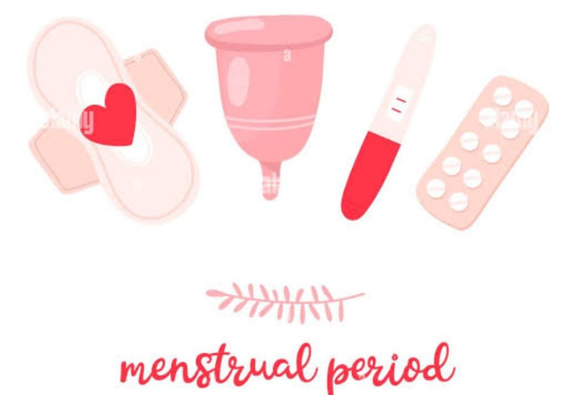

SANITARY PRODUCTS
Here we have elaborated on some common menstrual products, their usage and benefits-
A variety of sanitary products are available in the market:
Pads – Made up of absorbent material which is stuck to the inside of the panties and absorbs menstrual blood.
Tampons – These are pieces of cotton with a string at one end. A tampon is used internally by insertion into the vaginal canal. Tampons work by absorbing menstrual blood internally, and can be removed by pulling gently on the string.
Sanitary Napkins - They are attached to the inside the underwear, and absorb menstrual blood through layers of absorbent material. They come in many different shapes and types of absorbency.
Menstrual cups – This small silicone or latex cup works by being folded and inserted internally so that it rests on the vaginal wall, where it collects blood. The cups can stay in for up to 12 hours, at which point they should be removed, emptied, rinsed, and re-used as necessary. At the end of the menstrual cycle, they should be sterilized in hot water before using for the next period.
Period Underwear - They look like regular underwear, but have a special absorbent layer which prevents leakage, and as they are washable, they are one of the most sustainable options available.